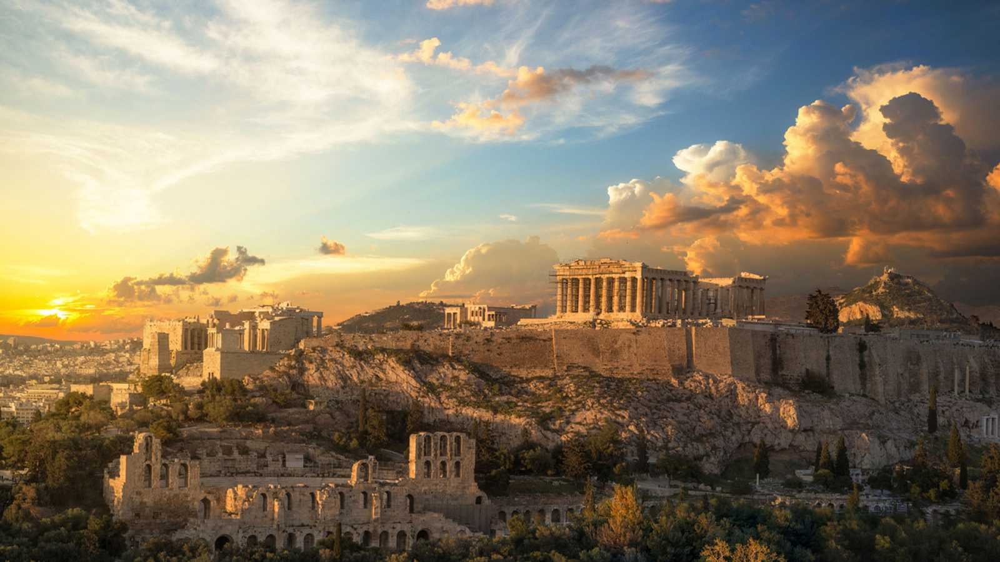

Bandera: Otra teoría histórica muy elaborada pero infundada sostiene que los colores de Grecia son una referencia visual al mar (agua azul y espuma blanca), que es un elemento de la tierra. Otra teoría poética compara el azul con el color del cielo y el blanco con la profundidad o pureza del alma griega.
Religion: Grecia se compone de un 97% de cristianos ortodoxos. El resto de la población es musulmana, católica y judía. Grecia (y las islas griegas) y Rusia son los únicos países que tienen mayoría de personas que pertenecen a la Iglesia Ortodoxa. El 94,38% de la población del país es Cristiano, así pues se trata de la religión más seguida por su población. En los últimos años el porcentaje de creyentes ha disminuido, de 97,75% a 97,39%.
Politica: Grecia es una república parlamentaria, el Presidente de la República es elegido cada cinco años por el Parlamento Helénico. Cada cuatro años se celebran elecciones al Parlamento Helénico tras las cuales se renueva el primer ministro y su gobierno.
Cultura: Agios Nikolás, San Nicolás Es Santa Claus en el resto del mundo por los griegos y la comunidad ortodoxa le da regalos a los niños.El personaje histórico es Nicolás de Myra, vivió en el siglo IV y fue canonizado. Hombre conocido por la caridad y la asistencia a los desfavorecidos. Santo patrón de los marineros griegos y de los griegos.
Agios Vasilis, San Basilio Obispo de Constantinopla historia similar a la de San Nicolás.Trabajó por la igualdad de los más desfavorecidos y derechos. El llamado "Basilopita" creado por él. un típico regalo de vacaciones griego y un regalo de Navidad y Año Nuevo que es similar a las uvas españolas. Este santo también otorga regalos en la noche del 24 al 25 de diciembre.
10 Ciudades mas visitada:
Top 10 ciudades más visitadas:
Atenas
Santorini
Naxos
Rodas
Miconos
Corfú
Delfos
Salónica
Zante (Zakinthos)
Kárpatos

Comidas típicas:
Tzatziki (Salsa de yogur con pepino y ajo)
Spanokopita (Pasta rellena de espinacas)
Tyropita (Pasta rellena de queso feta)
Spanakotiropites (Empanadillas de queso feta y espinacas)
Saganaki (Queso frito)
Dolmades (Hojas de parra rellenas de carne, arroz o vegetales)